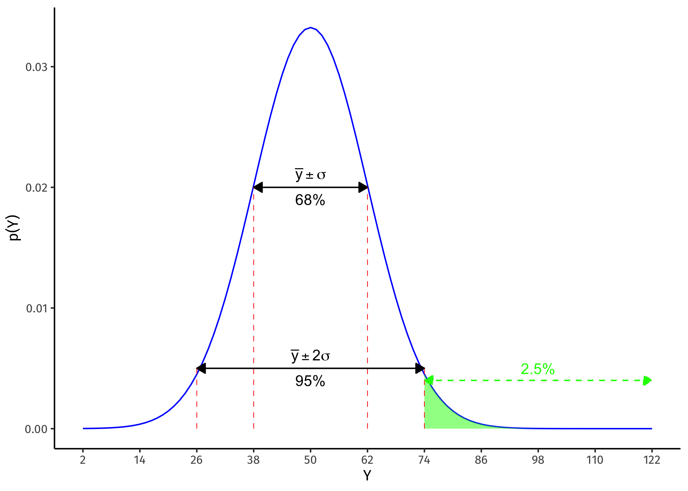
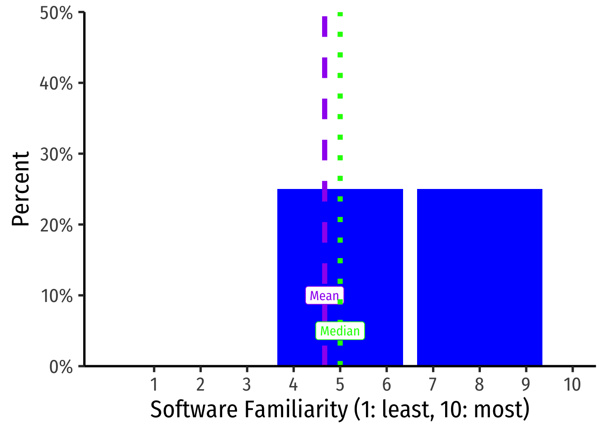
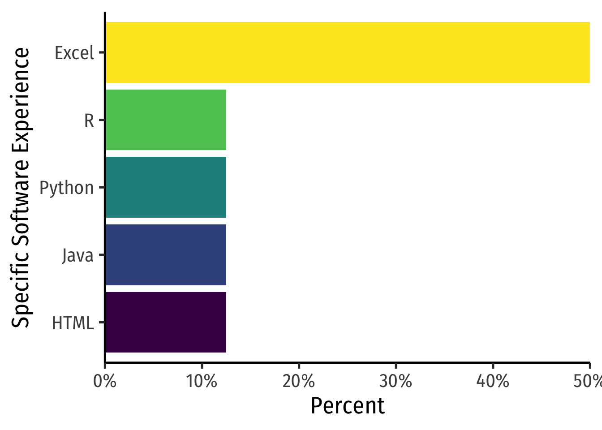
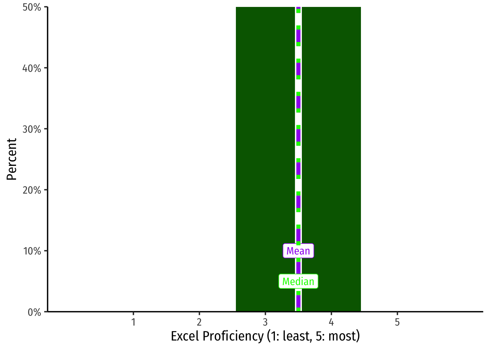

Preliminary Survey on Statistics and Software
Answer Key
Question 1
Using the following sample data:
\[8, 12, 9, 10, 11, 5, 15\]
Part A
Find the median.
First, arrange these in numerical order.
\[5, 8, 9, \mathbf{10}, 11, 12, 15\]
The middle number is 10, there are 3 on either side.
Part B
Calculate the sample mean, \(\bar{x}\)
\[\begin{aligned} \bar{x}&=\frac{1}{n}\displaystyle\sum^n_{i=1} x_i\\ \bar{x}&=\frac{5+8+9+10+11+12+15}{6} \\ &=\frac{70}{7}\\ &=10\\ \end{aligned}\]Part C
Calculate the sample standard deviation, \(s\)
Sample standard deviation is the average deviation of an observation from the mean, calculated as the square root of variance (which is the average squared deviation from the mean), (with a slight correction for samples: \(n-1\) rather than \(n\)). First we find the variance:
\[s^2=\frac{1}{n-1}\displaystyle \sum_{i=1}^n (x_i-\bar{x})^2\]
You can calculate this all at once:
\[\begin{aligned} s^2&=\frac{(5-10)^2+(8-10)^2+(9-10)^2+(10-10)^2+(11-10)^2+(12-10)^2+(15-10)^2}{7-1}\\ &=\frac{60}{6}\\ &=10\\ \end{aligned}\]But it is often easier to first find the deviations from the mean for each data point (2nd column), square them (3rd column), add them all up (bottom row) and then divide by \(n-1\):
| \(x_i\) | \((x_i-\bar{x})\) | \((x_i-\bar{x})^2\) |
|---|---|---|
| 5 | \(-5\) | 25 |
| 8 | \(-2\) | 4 |
| 9 | \(-1\) | 1 |
| 10 | 0 | 0 |
| 11 | 1 | 1 |
| 12 | 2 | 4 |
| 15 | 5 | 25 |
| \(\sum^n_{i=1}(x_i-\bar{x})^2\) | \(\mathbf{60}\) |
\[\begin{aligned} s^2&=\frac{1}{n-1} \displaystyle \sum_{i=1}^n (x_i-\bar{x})^2\\ &=\frac{1}{7-1}[60] \\ &=\frac{60}{6}\\ &=10\\ \end{aligned}\]
Standard deviation is the square root of variance:
\[s=\sqrt{s^2}=\sqrt{10}\approx 3.16\]
Question 2
For a fair, six-sided die:
Part A
What is the probability of rolling a 5?
All outcomes \(\{1, 2, 3, 4, 5, 6\}\) are equally likely, so the chance of any one outcome is the same, \(\frac{1}{6}\).
Part B
What is the probability of rolling an even number?
There are three possible disjoint outcomes, rolling a 2, 4, or 6, so we add up the individual probabilities:
\[\begin{aligned} P(x=even)&=P(x=2)+P(x=4)+P(x=6)\\ &=\bigg( \frac{1}{6} \bigg)+ \bigg( \frac{1}{6} \bigg)+ \bigg(\frac{1}{6} \bigg)\\ & = \frac{3}{6}\\ & = 0.5\\ \end{aligned}\]Part C
What is the probability of rolling an even number or a 3?
We know the probability of an even roll is 0.5, and rolling a 3 is disjoint from rolling an even number (a roll cannot be simultaneously 3 and even). So this is the union \(\cup\) of two events.
\[\begin{aligned} P(x= \text{even OR } x=3)&= P(x=even)+P(x=3)\\ &=\bigg( \frac{3}{6} \bigg) + \bigg( \frac{1}{6} \bigg)\\ &=\frac{4}{6}\\ \end{aligned}\]Part D
If you have two fair dice, what is the probability of rolling a 6 on both dice?
This is the intersection \(\cap\) of two independent possibilities: that each die will role a six, each with the probability of \(\frac{1}{6}\), and that the outcome of the first die has no bearing on the outcome of the second die. Thus, we can simply multiply the two events’ probabilities:
\[\begin{aligned} P(x_1=6, x_2=6) &= P(x_1=6) \times P(x_2=6)\\ &= \bigg(\frac{1}{6}\bigg) \times \bigg(\frac{1}{6}\bigg)\\ &=\frac{1}{36}\\ \end{aligned}\]Question 3
Hedge fund A earns an average rate of return of 2.5% per year with a standard deviation of 0.5%, while hedge fund B earns an average rate of return of 3.0% per year with a standard deviation of 2.0%. Which is more unusual, Hedge fund A earning a 4.0% return or hedge fund B earning a return -1.0% return? Why?1
We must standardize these variables and compare their \(Z\)-scores. We calculate an observation’s \(Z\)-score relative to its distribution by taking the observation, subtracting the mean of that variable, and dividing by its standard deviation:
\[Z=\frac{x_i-\bar{X}}{s_X} \]
For hedge fund A:
\[Z=\frac{4.0-2.5}{0.5}= 3\]
A 4.0% return for Hedge Fund \(A\) is 3 standard deviations above its mean return.
For hedge fund B:
\[Z=\frac{-1.0-3.0}{2.0}=-2\]
A \(-1.0\)% return for Hedge Fund \(B\) is 2 standard deviations below its mean return.
The event in hedge fund A is more extreme.
Question 4
A discrete random variable \(X\) has the following pdf:
| x | p(x) |
|---|---|
| 10 | 0.1 |
| 20 | 0.2 |
| 30 | 0.3 |
| 40 | 0.4 |
Calculate the sample standard deviation, \(s\) of \(X\).
First we must calculate the mean, \(\mu\) or \(E(X)\):
\[\begin{aligned}E(X) &= \sum^n_{i=1} x_ip_i \\ &= 0.1(10)+0.2(20)+0.3(30)+0.4(40)\\ & = 1+4+9+16\\ &=30\end{aligned}\]Now we must calculate the variance, the average squared distance from the mean (30) weighted by the probability of each value. We can do it all at once:
\[\begin{aligned} var(X) &= E[(X_i-\mu)^2]\\ & = \sum p_i(X_i-\mu)^2\\ &= 0.1(10-30)^2 +0.2(20-30)^2+0.3(30-30)^2+0.4(40-30)^2\\ & = 0.1(400)+0.2(100)+0.3(0)+0.4(100)\\ &= 40+20+0+40=100\\ \end{aligned}\]Alternatively, we could use the table method to make sure we keep our numbers straight:
| \(x_i\) | \(p_i\) | \((x_i-\mu)\) | \((x_i-\mu)^2\) | \(p_i(x_i-\mu)^2\) |
|---|---|---|---|---|
| 10 | 0.10 | \(-20\) | 400 | 40 |
| 20 | 0.20 | \(-10\) | 100 | 20 |
| 30 | 0.30 | 0 | 0 | 0 |
| 40 | 0.40 | 10 | 100 | 40 |
| \(\displaystyle\sum^n_{i=1} p_i(x_i-\mu)^2\) | \(\mathbf{100}\) |
The first column is each individual value. The second is the probability of each value. For the third row, we take the deviation of each value from the mean. The fourth column, we square it. The fifth column, we multiply the squared deviation by the probability of the value. Then, we add up the fifth column to get the variance, 100.
Standard deviation is just the square root of the variance:
\[sd(X) = \sqrt{var(X)}=\sqrt{100}=10\]
Question 5
The random variable \(Y\) is normally distributed with a mean of 50 and standard deviation of 12
\[Y \sim N (50,12)\]
Part A
What is the \(Z\)-score for \(Y=74\)?
The z-score formula subtracts the mean from a value and divides by the standard deviation to convert any normal distribution to the standard normal distribution \((Y \sim N(0,1)\):
\[\begin{aligned}z&=\frac{y-\mu}{\sigma}\\ z&=\frac{74-50}{12}\\ z&= 2\\ \end{aligned}\]Part B
In your own words, what does this \(Z\)-score mean?
The z-score or the standard score measures how many standard deviations a value is away from the distribution’s mean. Thus, this value, 74, is 2 standard deviations away from the distribution’s mean of 50.
Part C
What is the probability that \(Y\) takes on a value greater than 74?
This requires remembering an important property of standard normal distributions, the 68-95-99.7 rule: 68% of a normal distribution falls between 1 standard deviation from the mean, 95% between 2 standard deviations, and 99.7 between 3 standard deviations. Our z-score told us that we are 2 standard deviations from the mean, so there is a 95% chance that \(Y\) will fall within 2 standard deviations from the mean \((50 \pm 12\), so between 26 and 74).
However, we need to be careful, because the remaining 5% can fall on either side of two deviations from the mean (). What we care about is two deviations above the mean, that is, above 74. So divide this 5% in half, to account for the 2.5% chance that Y takes on a value greater than 74.
Question 6
Question 7
On a scale of 1 (least) to 10 (most), how familiar would you say you are with computer programming and/or statistical software?

Question 8
List any statistical software packages (e.g. R, Microsoft Excel, Stata, SAS, SPSS, Minitab, etc.) and any programming languages (e.g. html, php, C/++, Python, LaTeX, etc.) you have had any experience with, and rate your proficiency between 1 (least) and 5 (most), if applicable.


Footnotes
Hint: Standardize the two hedge funds.↩︎